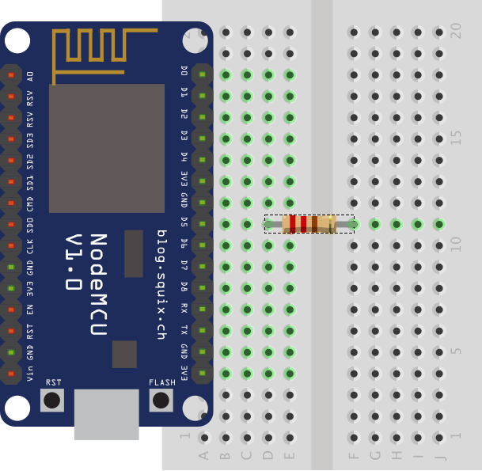
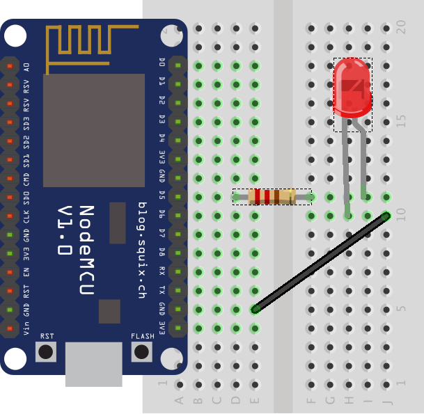
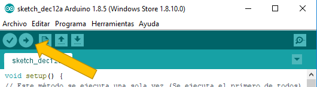

Tutorial 3: Cash Register

Objetivo:
El objetivo de este ejemplo es mostrar cómo se importar un proyecto desde el ordenador, cómo se leen código QR o código de barra.
Pasos a Seguir
- Abrir el entorno de desarrollo App Inventor.
- http://appinventor.mit.edu/explore/#
- Pulsar el botón create app!
- Selecciona una cuenta de Google
- Pulsa el menú Projects -> Import project (.aia) from my computer... (Descargar el proyecto que se proporciona en el botón)
- Cambia a la pestaña Blocks (Arriba a la derecha)

- Arrastra el componente VerticalArrangement del margen derecho (Palette-> Layout) debajo de la etiqueta anterior. Este componente permite colocar los elementos horizontalmente. Cambia las siguientes propiedades del componente:
- Align Vertial: “Center: 2” (hará que el contenido esté alineado verticalmente)
- Width: “Fill parent” (hará que ocupe todo el ancho de la pantalla)
- Coloque una resistencia de 220 Ohmios (cualquiera del kit) que haga de puente en la fila donde se encuentre el pin D5 como en la imagen.
- Seleccione cualquier led del kit y conectarlo de la siguiente forma. El pin que es más largo (ánodo (+)) deberá ir conectado en la otra fila donde salte la resistencia y el pin más corto (cátodo (-)) en la fila superior o inferior. Por último conectar un cable con la fila seleccionada donde esté el pin más corto del led con cualquier fila que ponga la letra G de Ground (Tierra). El esquema debe quedar parecido a la imagen.
- Conecte la placa al ordenador por el cable usb.
- Abra el entorno y copiar el siguiente código:
Código Led
void setup() {
// Este método se ejecuta una sola vez (Se ejecuta el primero de todos)
// La siguiente línea indica que la placa se comunicará a una velocidad de 9600 bits por segundo*
Serial.begin(9600);
// La siguiente línea indica que el pin D5 será de salida (devolverá 0v cuando la señal sea baja y 3.3V cuando la señal sea alta)
pinMode(D5,OUTPUT);
}
void loop() {
// Este método se ejecutará en bucle de manera infinita
// La siguiente línea enviar un mensaje desde la placa al ordenador
Serial.println("Enciendo el Led");
// Indica que se devuelva el nivel alto (3.3v) por el pin D5
digitalWrite(D5,HIGH);
// La siguiente línea indica cuantos milisegundos esperará o dormirá la placa (1000 milisegundos = 1 segundo)
delay(2000);
// La siguiente línea enviar un mensaje desde la placa al ordenador
Serial.println("Apaga el Led");
// Indica que se devuelva el nivel bajo (0v) por el pin D5
digitalWrite(D5,LOW);
// La siguiente línea indica cuantos milisegundos esperará o dormirá la placa (1000 milisegundos = 1 segundo)
delay(2000);
}
/* * En Internet en algunos tutoriales sobre Arduino y otras placas puede encontrase el término "bits por segundos"
* intercambiado por baudios. En este caso concreto son equivalente dado que en cada estado de la señal se envia
* un único bit pero no tiene porque ser así en todos los casos por lo tanto "bits por segundos" y baudios no
* siempre son equivalentes. */
- Pulse el segundo botón del entorno para compilar y subir el código.
- Tras transferir el código podrá ver cómo parpadea el led cada dos segundos
Explicación del Código de este Ejemplo
La función Setup se encarga de indicar la velocidad a la que se comunicará la placa con el ordenador y configurar el pin D5 como pin de salida de señal.
En la función loop se encarga de escribir un mensaje indicando qué va a hacer con el led, dar la orden de encender el led y esperar 2000 milisegundos (2 segundos). En la segunda parte de la función se indica que se va a apagar el led, se da la orden de no dar voltaje al pin y se espera 2000 milisegunso (2 segundos).
- Arrastra el componente VerticalArrangement del margen derecho (Palette-> Layout) debajo de la etiqueta anterior. Este componente permite colocar los elementos horizontalmente. Cambia las siguientes propiedades del componente: